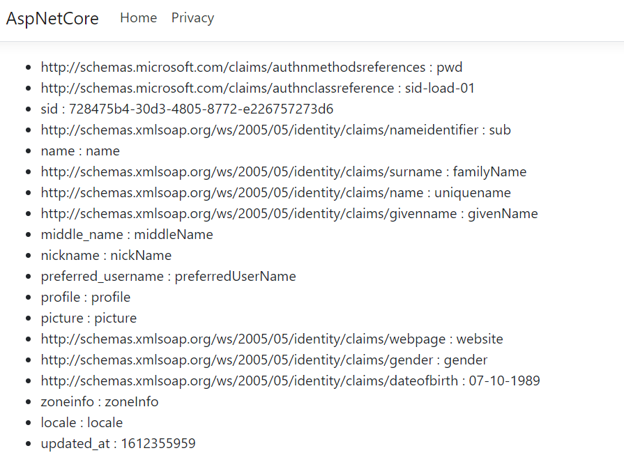

Protect application from undesirable users
An OPENID server can be used to protect any type of applications from undesirable users. Following chapters describe how to implement user authentication for each type of application.
Recommended flow by application type
There are different grant-types to get tokens, the choice depends on the type of application.

| Applications | Recommended Configuration |
|---|---|
| Server-Side (Web application) - ASP.NET CORE | Grant-Type : authorization code |
| Single Page Application (SPA) - Angular | Grant-Type : authorization code, Client Authentication Method : PKCE |
| Native - Mobile, WPF application | Grant-Type : authorization code, Client Authentication Method : PKCE |
| Trusted | Grant-Type : password |
Server-Side application
Example : ASP.NET CORE application.
Server-Side application should use authorization code grant-type.
Warning
Before you start, Make sure there is a Visual Studio Solution with a configured OpenId server.
Source Code
The source code of this project can be found here.
Configure OpenId Server
The first step consists to configure the OPENID client.
- Open the Visual Studio Solution and edit the
OpenIdDefaultConfiguration.csfile. - Add a new OpenId client :
new OpenIdClient
{
ClientId = "website",
ClientSecret = "websiteSecret",
ApplicationKind = ApplicationKinds.Web,
TokenEndPointAuthMethod = "client_secret_post",
ApplicationType = "web",
UpdateDateTime = DateTime.UtcNow,
CreateDateTime = DateTime.UtcNow,
TokenExpirationTimeInSeconds = 60 * 30,
RefreshTokenExpirationTimeInSeconds = 60 * 30,
TokenSignedResponseAlg = "RS256",
IdTokenSignedResponseAlg = "RS256",
AllowedScopes = new List<OAuthScope>
{
SIDOpenIdConstants.StandardScopes.OpenIdScope,
SIDOpenIdConstants.StandardScopes.Profile,
SIDOpenIdConstants.StandardScopes.Email
},
GrantTypes = new List<string>
{
"authorization_code",
},
RedirectionUrls = new List<string>
{
"https://localhost:7000/signin-oidc"
},
PreferredTokenProfile = "Bearer",
ResponseTypes = new List<string>
{
"token",
"id_token"
}
}
- Run the OPENID server.
cd src\OpenId
dotnet run --urls=https://localhost:5001
Create ASP.NET CORE application
The last step consists to create and configure an ASP.NET CORE project.
- Open a command and navigate to the
srcsubfolder of your project. - Create a directory
AspNetCoreand create an ASP.NET CORE project in it :
mkdir AspNetCore
dotnet new mvc -n AspNetCore
- Navigate to the directory
AspNetCoreand install the Nuget packageMicrosoft.AspNetCore.Authentication.OpenIdConnect.
cd AspNetCore
dotnet add package Microsoft.AspNetCore.Authentication.OpenIdConnect
- Add the
AspNetCoreproject into your Visual Studio solution.
cd ..\..
dotnet sln add ./src/AspNetCore/AspNetCore.csproj
- Edit the
Startup.csfile and configure the OpenId authentication. In theConfigureServicesprocedure, add the following code :
services.AddAuthentication(options =>
{
options.DefaultScheme = "Cookies";
options.DefaultChallengeScheme = "sid";
})
.AddCookie("Cookies")
.AddOpenIdConnect("sid", options =>
{
options.SignInScheme = "Cookies";
options.Authority = "https://localhost:5001";
options.RequireHttpsMetadata = false;
options.ClientId = "website";
options.SaveTokens = true;
});
- To ensure the authentication service execute on each request, add
UseAuthenticationin theConfigureprocedure. The procedure should look like to something like this :
public void Configure(IApplicationBuilder app, IWebHostEnvironment env)
{
app.UseHttpsRedirection();
app.UseStaticFiles();
app.UseRouting();
app.UseAuthentication();
app.UseAuthorization();
app.UseEndpoints(endpoints =>
{
endpoints.MapControllerRoute(
name: "default",
pattern: "{controller=Home}/{action=Index}/{id?}");
});
}
- Add a
ClaimsControllerwith one protected operation :
public class ClaimsController : Controller
{
[Authorize]
public IActionResult Index()
{
return View();
}
}
- Create a new view
Views\Claims\Index.cshtml. It will display all the claims of the authenticated user.
<ul>
@foreach (var claim in User.Claims)
{
<li>@claim.Type : @claim.Value</li>
}
</ul>
- In a command prompt, navigate to the directory
src\AspNetCoreand run the application under the port7000.
dotnet run --urls=https://localhost:7000
- Browse this URL https://localhost:7000/claims, the User-Agent is automatically redirected to the OPENID server.
Submit the credentials - login :
sub, password :passwordand confirm the consent. You'll be redirected to the following screen where your claims will be displayed.

Single Page Application (SPA)
Example: Angular application.
SPA application use authorization code grant-type with PKCE client authentication method.
Warning
Before you start, Make sure there is a Visual Studio Solution with a configured OpenId server.
Source Code
The source code of this project can be found here.
Configure OpenId Server
The first step consists to configure the OPENID client.
- Open the Visual Studio solution and edit
OpenIdDefaultConfiguration.csfile. - Add a new OpenId client:
new OpenIdClient
{
ClientId = "website",
ClientSecret = "websiteSecret",
ApplicationKind = ApplicationKinds.SPA,
TokenEndPointAuthMethod = "pkce",
ApplicationType = "web",
UpdateDateTime = DateTime.UtcNow,
CreateDateTime = DateTime.UtcNow,
TokenExpirationTimeInSeconds = 60 * 30,
RefreshTokenExpirationTimeInSeconds = 60 * 30,
TokenSignedResponseAlg = "RS256",
IdTokenSignedResponseAlg = "RS256",
AllowedScopes = new List<OAuthScope>
{
SIDOpenIdConstants.StandardScopes.OpenIdScope,
SIDOpenIdConstants.StandardScopes.Profile,
SIDOpenIdConstants.StandardScopes.Email,
SIDOpenIdConstants.StandardScopes.Role
},
GrantTypes = new List<string>
{
"authorization_code"
},
RedirectionUrls = new List<string>
{
"http://localhost:4200"
},
PreferredTokenProfile = "Bearer",
ResponseTypes = new List<string>
{
"token",
"id_token",
"code"
}
}
- Run the OPENID server.
cd src\OpenId
dotnet run --urls=https://localhost:5001
Create angular application
The last step consists to create and configure an Angular project.
- Open a command prompt and navigate to the
srcsubfolder of your project. - Create an ASP.NET CORE with angular project, its name must be
Spa.
mkdir Spa
dotnet new angular -n Spa
- Navigate to the directory
Spa\ClientAppand install the npm packageangular-oauth2-oidc.
cd Spa\ClientApp
npm i angular-oauth2-oidc --save
- Add the
Spaproject into your Visual Studio solution.
cd ..\..\..
dotnet sln add ./src/Spa/Spa.csproj
- Edit the file
ClientApp\src\app\app.module.tsand import theOAuthModulemodule.
@NgModule({
declarations: [
// etc.
],
imports: [
// etc.
OAuthModule.forRoot()
],
providers: [],
bootstrap: []
})
export class AppModule { }
- Create an
auth-config.tsfile in the directoryClientApp\src\app, replace its content with the following code. This file contains the authentication settings : Url of the identity provider or the Client Identifier.
import { AuthConfig } from 'angular-oauth2-oidc';
export const authCodeFlowConfig: AuthConfig = {
issuer: 'https://localhost:5001',
redirectUri: window.location.origin,
clientId: 'website',
responseType: 'code',
scope: 'openid profile email role',
showDebugInformation: true,
};
- Edit the
ClientApp\src\app\nav-menu\nav-menu.component.tsfile, import theauthCodeFlowConfigJSON object, inject theOAuthServiceinto the constructor and add aloginprocedure. This procedure will be called to initiate the authentication workflow.
import { OAuthService } from 'angular-oauth2-oidc';
import { authCodeFlowConfig } from '../auth-config';
@Component({
selector: 'app-nav-menu',
templateUrl: './nav-menu.component.html',
styleUrls: ['./nav-menu.component.css']
})
export class NavMenuComponent {
isConnected: boolean = false;
name: string;
constructor(private oauthService: OAuthService) {
this.oauthService.configure(authCodeFlowConfig);
this.oauthService.loadDiscoveryDocumentAndTryLogin();
var claims: any = this.oauthService.getIdentityClaims();
if (!claims) {
return;
}
this.isConnected = true;
this.name = claims["sub"];
}
login(evt: any) {
evt.preventDefault();
this.oauthService.initImplicitFlow();
}
}
- Edit the
ClientApp\src\app\nav-menu\nav-menu.component.htmlfile and add a login button.
<li class="nav-item" *ngIf="!isConnected">
<a class="nav-link text-dark" (click)="login($event)">Authenticate</a>
</li>
<li class="nav-item" *ngIf="isConnected">
<a class="nav-link text-dark">Welcome {{name}}</a>
</li>
- In a command prompt, navigate to the
src\Spadirectory and launch the project.
dotnet run --urls=http://localhost:4200
- Navigate to the website http://localhost:4200 and authenticate with the login :
suband password :password.

Native application
Examples : WPF, Xamarin application etc...
Native application use authorization code grant-type with PKCE client authentication method.
Warning
Before you start, Make sure there is a Visual Studio Solution with a configured OpenId server.
Source Code
The source code of this project can be found here.
Configure OpenId Server
The first step consists to configure the OPENID client.
- Open the Visual Studio Solution and edit the
OpenIdDefaultConfiguration.csfile. - Add a new OpenId client :
new OpenIdClient
{
ClientId = "nativeXamarin",
ClientSecret = "nativeXamarinSecret",
ApplicationKind = ApplicationKinds.Native,
TokenEndPointAuthMethod = "pkce",
ApplicationType = "web",
UpdateDateTime = DateTime.UtcNow,
CreateDateTime = DateTime.UtcNow,
TokenExpirationTimeInSeconds = 60 * 30,
RefreshTokenExpirationTimeInSeconds = 60 * 30,
TokenSignedResponseAlg = "RS256",
IdTokenSignedResponseAlg = "RS256",
AllowedScopes = new List<OAuthScope>
{
SIDOpenIdConstants.StandardScopes.OpenIdScope,
SIDOpenIdConstants.StandardScopes.Profile,
SIDOpenIdConstants.StandardScopes.Email
},
GrantTypes = new List<string>
{
"authorization_code"
},
RedirectionUrls = new List<string>
{
"com.companyname.native:/oauth2redirect"
},
PreferredTokenProfile = "Bearer",
ResponseTypes = new List<string>
{
"code"
}
}
- Run the OPENID server.
cd src\OpenId
dotnet run --urls=http://*:5000;https://*:5001
Create a Xamarin application
The last step consists to create and configure a xamarin project.
- Open the
QuickStartVisual Studio Solution. - Create an empty Mobile Application (Xamarin Forms) project. Its name must be
Native. - In the
Nativeproject, add a newAuthInfoclass. This class will be used by theILoginProviderinterface to return the authentication result.
public class AuthInfo
{
public bool IsAuthorized { get; set; }
public string AccessToken { get; set; }
public string RefreshToken { get; set; }
public string Scope { get; set; }
public string IdToken { get; set; }
}
- In the
Nativeproject, add a newILoginProviderinterface with one functionLoginAsync.
public interface ILoginProvider
{
Task<AuthInfo> LoginAsync();
}
- Add the nuget package
Xamarin.Android.Support.v4into theNative.Androidproject. - Add the nuget package
Xamarin.Android.Support.CustomTabsinto theNative.Androidproject. - Edit the
Nuget.Androidproject and add the following line inside thePropertyGroupelement.
<AndroidManifestPlaceholders>appAuthRedirectScheme=''</AndroidManifestPlaceholders>
- Edit the Android Manifest, set the package name to
com.companyname.nativexamarinand add the activity below inside theapplicationelement.
<activity android:name="net.openid.appauth.RedirectUriReceiverActivity">
<intent-filter>
<action android:name="android.intent.action.VIEW" />
<category android:name="android.intent.category.DEFAULT" />
<category android:name="android.intent.category.BROWSABLE" />
<data android:scheme="com.companyname.nativexamarin"/>
</intent-filter>
</activity>
- Add the nuget package
Xamarin.OpenId.AppAuth.Androidinto theNative.Androidproject. This Nuget package is a client SDK for communicating with OAUTH2.0 and OPENID connect providers. - Add the nuget package
Newtonsoft.Jsoninto theNative.Androidproject. - Add the nuget package
Nito.AsyncExinto theNative.Androidproject. This Nuget package is a helper library for the Task-Based Asynchronous Pattern (TAP). - In the
Native.Androidproject, add a reference toSystem.Net.Http. - In the
Native.Androidproject, edit theMainActivityclass and add a singleton:
public class MainActivity : global::Xamarin.Forms.Platform.Android.FormsAppCompatActivity
{
internal static MainActivity Instance { get; private set; }
protected override void OnCreate(Bundle savedInstanceState)
{
Instance = this;
}
}
- In the
Native.Androidproject, add a newAndroidLoginProviderclass. Its content must look like :
public class AndroidLoginProvider : ILoginProvider
{
private readonly AuthorizationService _authService;
private static AndroidLoginProvider _instance;
private static AuthState _authState;
private static AsyncAutoResetEvent _loginResultWaitHandle;
public AndroidLoginProvider()
{
if (_instance == null)
{
_instance = this;
}
_authService = new AuthorizationService(MainActivity.Instance);
}
internal static AndroidLoginProvider Instance
{
get
{
return _instance;
}
}
public async Task<AuthInfo> LoginAsync()
{
_loginResultWaitHandle = new AsyncAutoResetEvent(false);
try
{
using (var httpClient = new HttpClient(GetUnsecuredHandler()))
{
var httpResult = await httpClient.GetAsync("https://10.0.2.2:5001/.well-known/openid-configuration");
var json = await httpResult.Content.ReadAsStringAsync();
var jObj = JObject.Parse(json);
var configuration = new AuthorizationServiceConfiguration(
Android.Net.Uri.Parse(jObj["authorization_endpoint"].ToString()),
Android.Net.Uri.Parse(jObj["token_endpoint"].ToString()))
{
DiscoveryDoc = new AuthorizationServiceDiscovery(new JSONObject(json))
};
MakeAuthRequest(configuration, new AuthState());
await _loginResultWaitHandle.WaitAsync();
}
}
catch (AuthorizationException) { }
return new AuthInfo()
{
IsAuthorized = _authState?.IsAuthorized ?? false,
AccessToken = _authState?.AccessToken,
IdToken = _authState?.IdToken,
RefreshToken = _authState?.RefreshToken,
Scope = _authState?.Scope
};
}
private void MakeAuthRequest(AuthorizationServiceConfiguration serviceConfig, AuthState authState)
{
var authRequest = new AuthorizationRequest.Builder(
serviceConfig, "nativeXamarin",
$"{ResponseTypeValues.Code}",
Android.Net.Uri.Parse("com.companyname.nativexamarin:/oauth2redirect"))
.SetScope("openid profile email")
.Build();
var postAuthorizationIntent = CreatePostAuthorizationIntent(MainActivity.Instance, authRequest, serviceConfig.DiscoveryDoc, authState);
_authService.PerformAuthorizationRequest(authRequest, postAuthorizationIntent);
}
private PendingIntent CreatePostAuthorizationIntent(Context context, AuthorizationRequest request, AuthorizationServiceDiscovery discoveryDoc, AuthState authState)
{
var intent = new Intent(context, typeof(MainActivity));
intent.PutExtra("authState", authState.JsonSerializeString());
if (discoveryDoc != null)
{
intent.PutExtra(
"authServiceDiscovery",
discoveryDoc.DocJson.ToString());
}
return PendingIntent.GetActivity(context, request.GetHashCode(), intent, 0);
}
internal void NotifyOfCallback(Intent intent)
{
try
{
if (!intent.HasExtra("authState"))
{
_authState = null;
}
else
{
try
{
_authState = AuthState.JsonDeserialize(intent.GetStringExtra("authState"));
}
catch (JSONException)
{
_authState = null;
}
}
if (_authState != null)
{
AuthorizationResponse response = AuthorizationResponse.FromIntent(intent);
AuthorizationException authEx = AuthorizationException.FromIntent(intent);
_authState.Update(response, authEx);
if (response != null)
{
try
{
var clientAuthentication = _authState.ClientAuthentication;
}
catch (ClientAuthenticationUnsupportedAuthenticationMethod)
{
SetWaitHandle();
return;
}
var request = response.CreateTokenExchangeRequest();
using (var httpClient = new HttpClient(GetUnsecuredHandler()))
{
var jObj = new List<KeyValuePair<string, string>>
{
new KeyValuePair<string, string>("client_id", request.ClientId),
new KeyValuePair<string, string>("code", request.AuthorizationCode),
new KeyValuePair<string, string>("code_verifier", request.CodeVerifier),
new KeyValuePair<string, string>("grant_type", request.GrantType),
new KeyValuePair<string, string>("scope", request.Scope),
new KeyValuePair<string, string>("redirect_uri", request.RedirectUri.ToString())
};
var httpRequest = new HttpRequestMessage
{
Method = HttpMethod.Post,
RequestUri = new Uri(request.Configuration.TokenEndpoint.ToString()),
Content = new FormUrlEncodedContent(jObj)
};
var httpResult = httpClient.SendAsync(httpRequest).Result;
var tokenResponseJObject = JObject.Parse(httpResult.Content.ReadAsStringAsync().Result);
tokenResponseJObject.Add("request", JObject.Parse(request.JsonSerializeString()));
var tokenResponse = TokenResponse.JsonDeserialize(new JSONObject(tokenResponseJObject.ToString()));
ReceivedTokenResponse(tokenResponse, null);
}
}
}
else
{
SetWaitHandle();
}
}
catch (Exception)
{
SetWaitHandle();
}
}
private void ReceivedTokenResponse(TokenResponse tokenResponse, AuthorizationException authException)
{
try
{
_authState.Update(tokenResponse, authException);
}
catch (Exception) { }
finally
{
SetWaitHandle();
}
}
private HttpClientHandler GetUnsecuredHandler()
{
HttpClientHandler handler = new HttpClientHandler();
handler.ServerCertificateCustomValidationCallback = (message, cert, chain, errors) =>
{
return true;
};
return handler;
}
private void SetWaitHandle()
{
if (_loginResultWaitHandle != null)
{
_loginResultWaitHandle.Set();
}
}
}
- In the
Native.Androidproject, edit theMainActivityclass, register theAndroidLoginProviderdependency and process the parameters received by the Intentcom.companyname.native:/oauth2redirect.
protected override void OnCreate(Bundle savedInstanceState)
{
DependencyService.Register<ILoginProvider, AndroidLoginProvider>();
if (Intent != null && AndroidLoginProvider.Instance != null)
{
AndroidLoginProvider.Instance.NotifyOfCallback(Intent);
}
}
- In the
Nativeproject, edit theMainPage.xamlfile and add an Authentication button.
<Button Text="Authenticate" Clicked="Authenticate"></Button>
- In the
Nativeproject, edit theMainPage.xaml.cscode-behind and add a privateAuthenticateprocedure. This procedure will be used to authenticate the end-user.
public partial class MainPage : ContentPage
{
private readonly ILoginProvider _loginProvider;
public MainPage()
{
InitializeComponent();
_loginProvider = DependencyService.Resolve<ILoginProvider>();
}
private void Authenticate(object sender, EventArgs e)
{
_loginProvider.LoginAsync().ContinueWith(async(authInfo) =>
{
if (!string.IsNullOrWhiteSpace(authInfo.Result.IdToken))
{
MainThread.BeginInvokeOnMainThread(() =>
{
App.Current.MainPage.DisplayAlert("Auth", $"IdToken is : {authInfo.Result.IdToken}", "Cancel");
});
}
});
}
}
- Run the android application into an emulator and click on the Authenticate button. You'll be redirected to the Authentication window. Submit the credentials : login -
sub, password -passwordand confirm the consent.

- The identity token will be displayed in a dialog.

Trust application
Example : Console application.
Server-Side application should use password grant-type.
If you own both the client application and the resource that is accessing, then your application can be trusted.
Warning
Before you start, Make sure there is a Visual Studio Solution with a configured OpenId server.
Source Code
The source code of this project can be found here.
Configure OpenId Server
The first step consists to configure the OPENID client.
- Open the Visual Studio Solution and edit the
OpenIdDefaultConfiguration.csfile. - Add a new OpenId client :
new OpenIdClient
{
ClientId = "trusted",
ClientSecret = "trustedSecret",
ApplicationKind = ApplicationKinds.Service,
TokenEndPointAuthMethod = "client_secret_post",
UpdateDateTime = DateTime.UtcNow,
CreateDateTime = DateTime.UtcNow,
TokenExpirationTimeInSeconds = 60 * 30,
RefreshTokenExpirationTimeInSeconds = 60 * 30,
TokenSignedResponseAlg = "RS256",
AllowedScopes = new List<OAuthScope>
{
SIDOpenIdConstants.StandardScopes.OpenIdScope,
SIDOpenIdConstants.StandardScopes.Profile,
SIDOpenIdConstants.StandardScopes.Email
},
GrantTypes = new List<string>
{
"password"
},
PreferredTokenProfile = "Bearer"
}
- Run the OPENID server.
cd src\OpenId
dotnet run --urls=https://localhost:5001
Create console application
The last step consists to create and configure a console application.
- Open a command prompt and navigate to the
srcsubfolder of your project. - Create a console application, its name must be
Console.
mkdir Console
dotnet new console -n Console
- Add the
Consoleproject into your Visual Studio solution.
cd ..
dotnet sln add ./src/Console/Console.csproj
- Edit the
Program.csfile and replace its content with the following code. The grant typepasswordis used to authenticate the user and get his access token.
class Program
{
static void Main(string[] args)
{
using (var httpClient = new HttpClient())
{
var form = new Dictionary<string, string>
{
{ "grant_type", "password" },
{ "username", "sub" },
{ "password", "password" },
{ "client_id", "trusted" },
{ "client_secret", "trustedSecret" }
};
var tokenResponse = httpClient.PostAsync("https://localhost:5001/token", new FormUrlEncodedContent(form)).Result;
var json = tokenResponse.Content.ReadAsStringAsync().Result;
System.Console.WriteLine(json);
}
}
}
- Run the console application, the access token should be displayed.